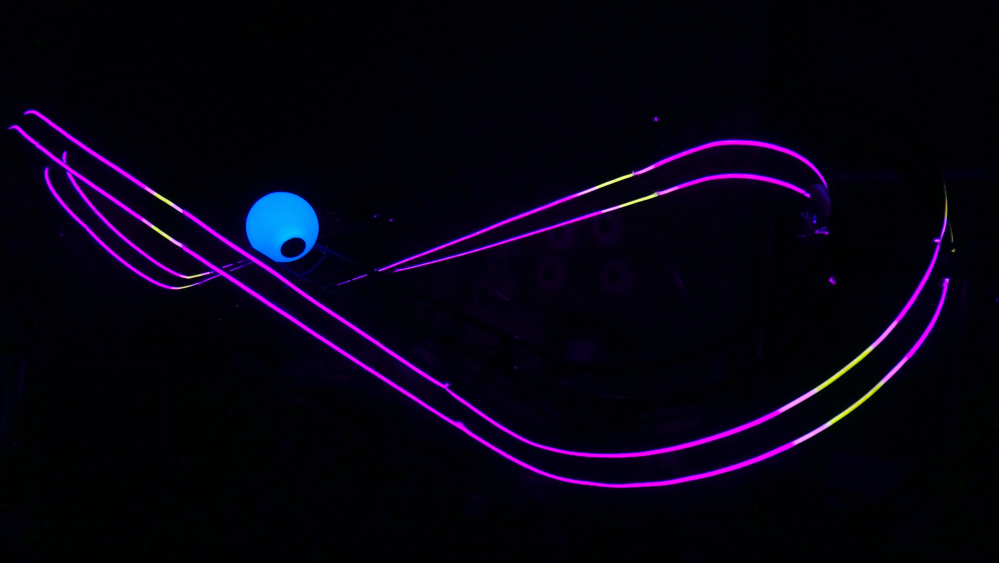
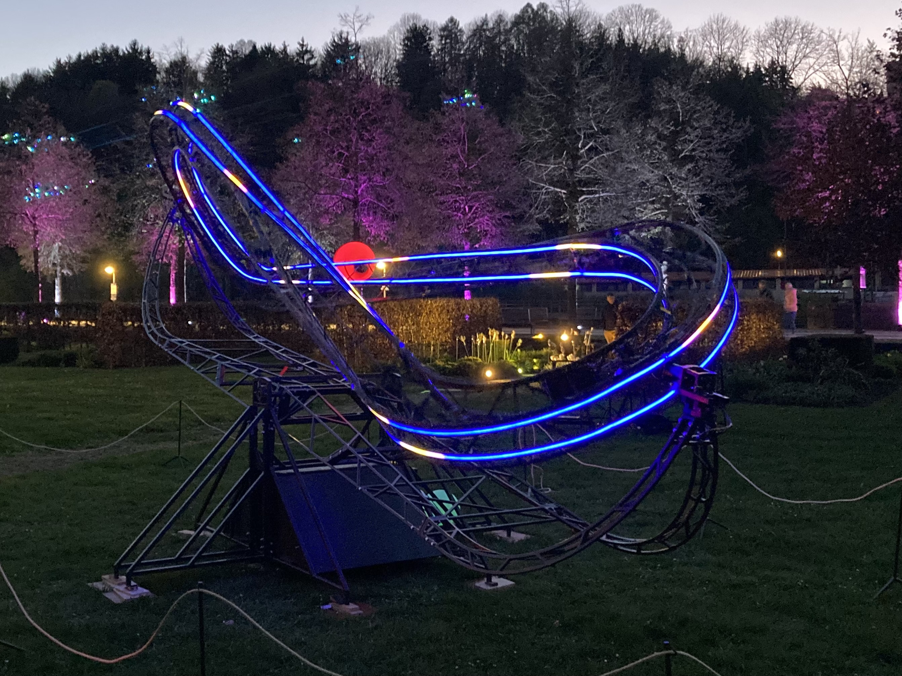
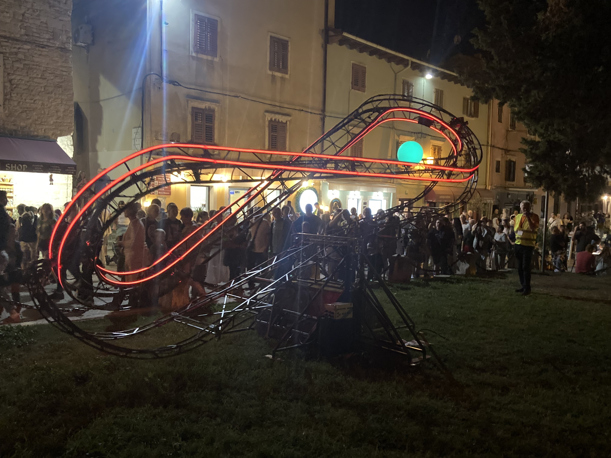
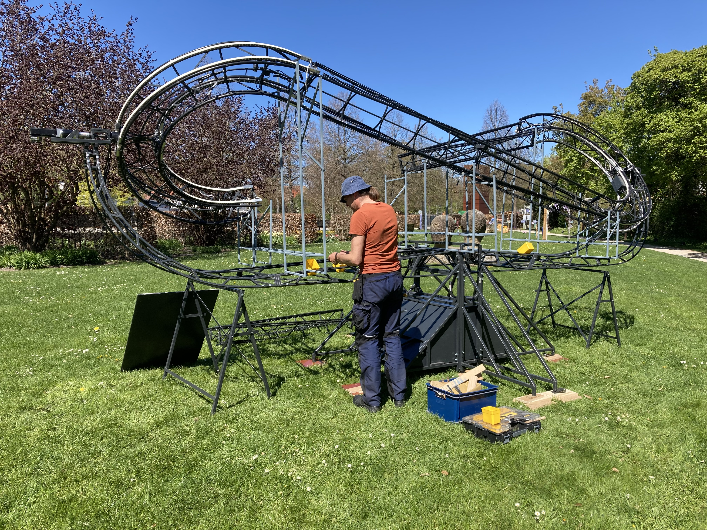
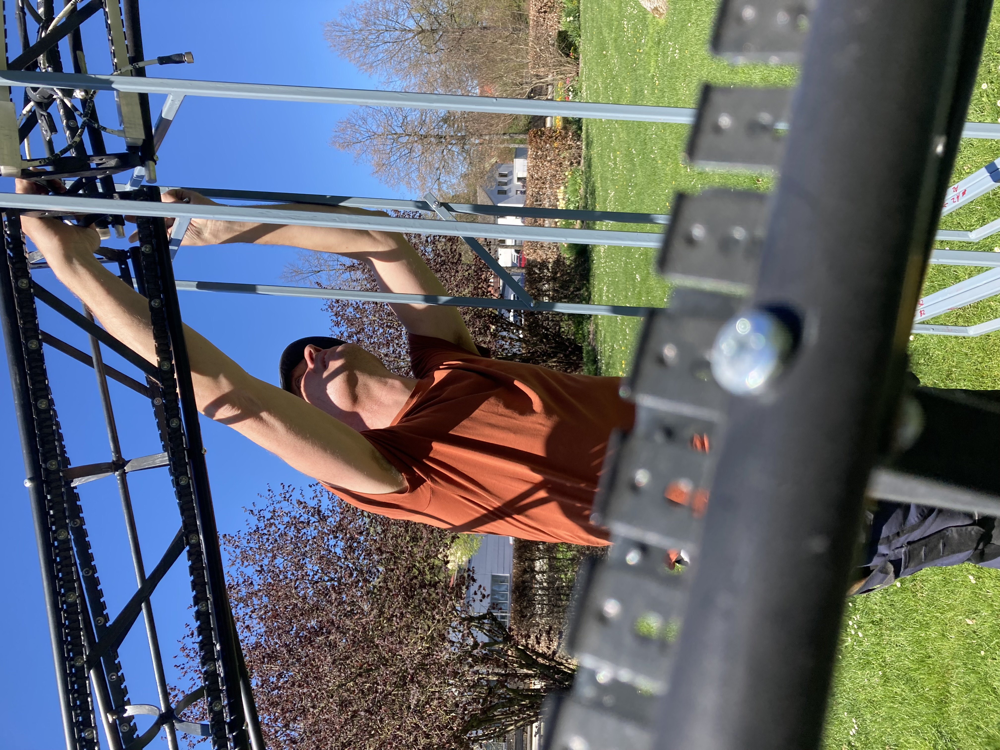
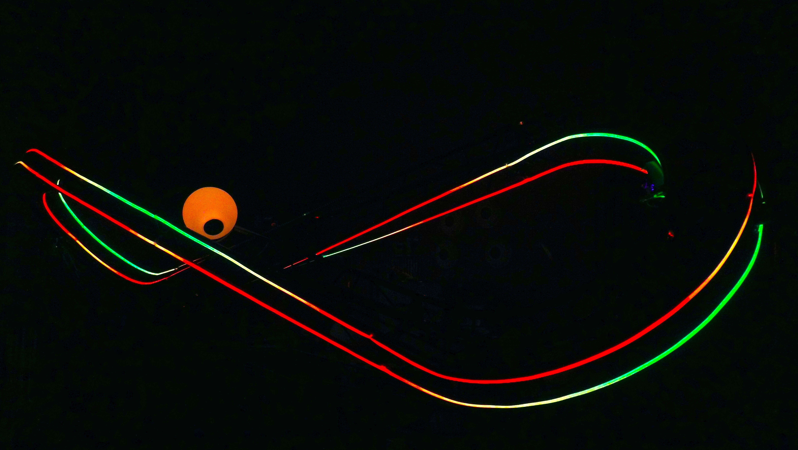
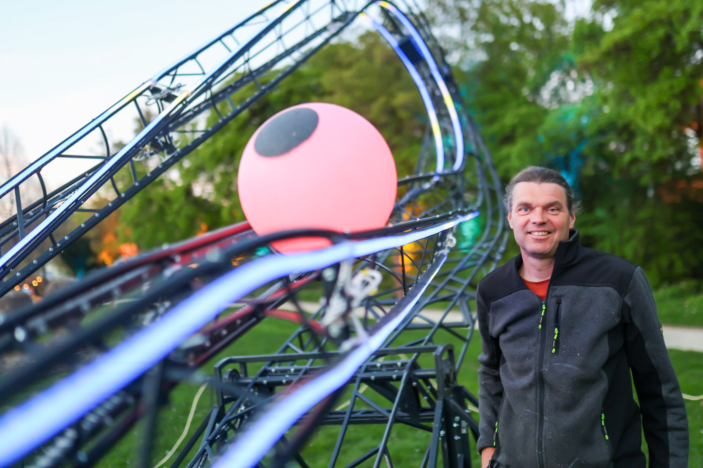
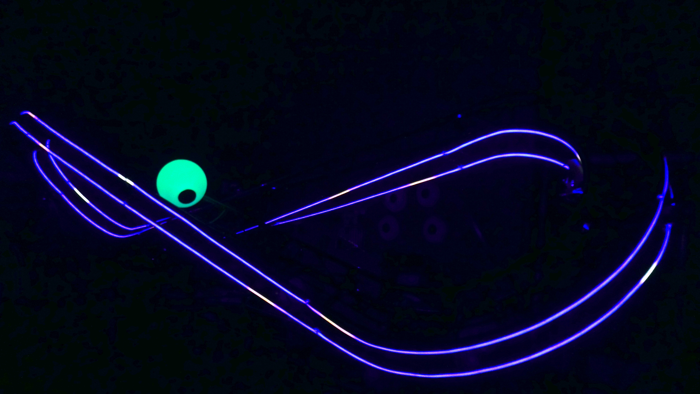
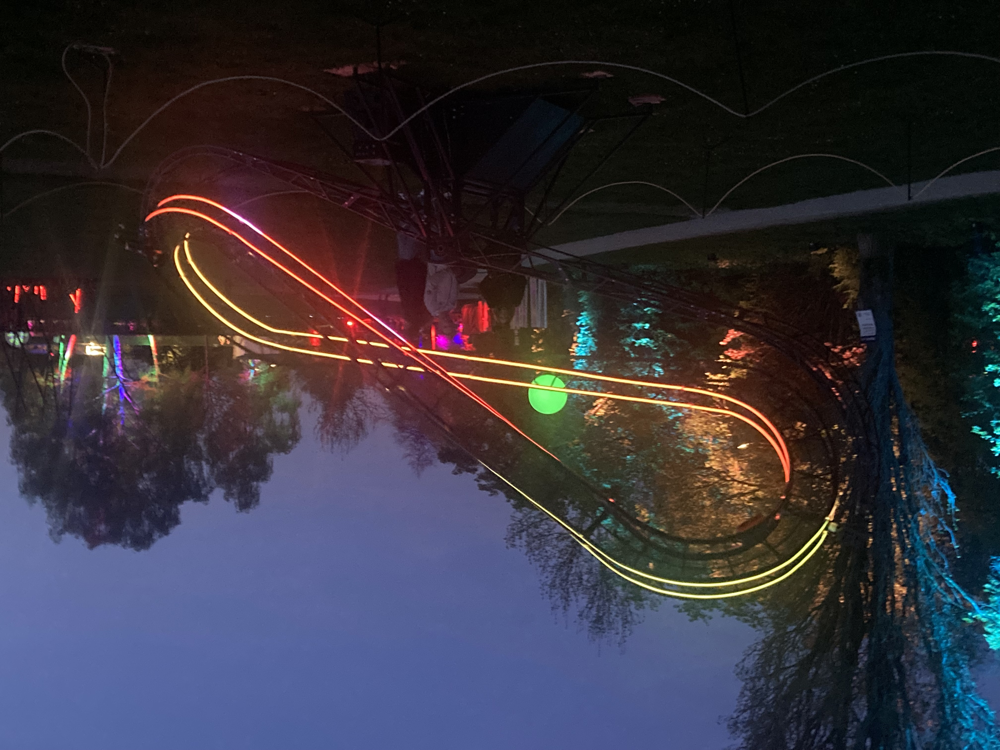
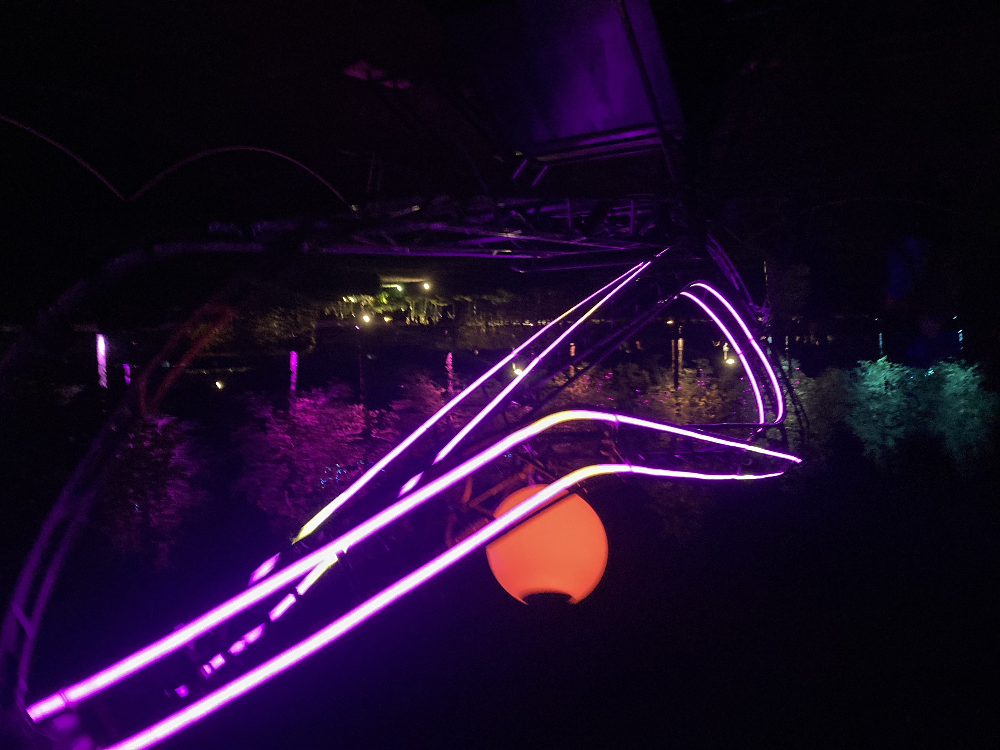

This marble run plays with balance and shows how opposites are connected. It is a never-ending play of a marble in a track shaped like a lemniscate with the twist of a Möbius band. The surface of a Möbius band is rotated one turn, creating a connection between top and bottom. Because top and bottom can no longer be distinguished, it becomes a symbol of connection and non-duality, showing that opposites are connected. A lemniscate is known as a sign of infinity.
The installation has to make a seemingly impossible turning and swinging movement to keep the marble in the track. This creates a dynamic interplay of geometry, balance and movement.
The endless repetition and the passage of both sides of the Möbius band by the sphere represent the importance of connection and the acceptance of contradictions. In this way the installation makes a call to seek connection and to counter social and political polarisation.
Deze knikkerbaan speelt met balans en laat zien hoe tegenstellingen met elkaar verbonden zijn. Het geeft een eindeloos spel van een knikker in een baan met de vorm van de lemniscaat en de wrong van een Möbiusband. Het oppervlak van een Möbiusband wordt één slag gedraaid, waardoor er een verbinding tussen boven- en onderkant ontstaat. Omdat er geen sprake meer kan zijn van boven- of onderkant, is het een symbool voor verbinding en non-dualiteit en beeldt het uit dat tegenstellingen met elkaar verbonden zijn. Een lemniscaat staat bekend als een teken van oneindigheid.
De installatie moet een schijnbaar onmogelijke draai- en schommelbeweging maken om de knikker in de baan te houden. Hierdoor ontstaat een dynamisch samenspel van geometrie, balans en beweging.
De eindeloze herhaling en de passage van beide kanten van de Möbiusband door de bol vertegenwoordigen het belang van verbinding en acceptatie van tegenstrijdigheden. Zo doet de installatie een oproep om verbindingen te zoeken en maatschappelijke en politieke polarisatie tegen te gaan.